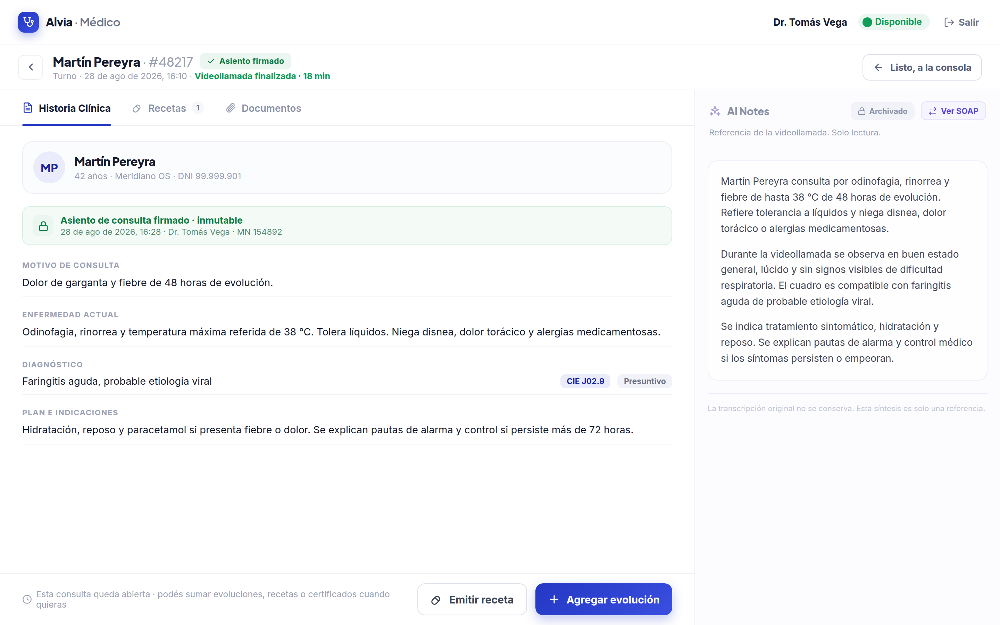
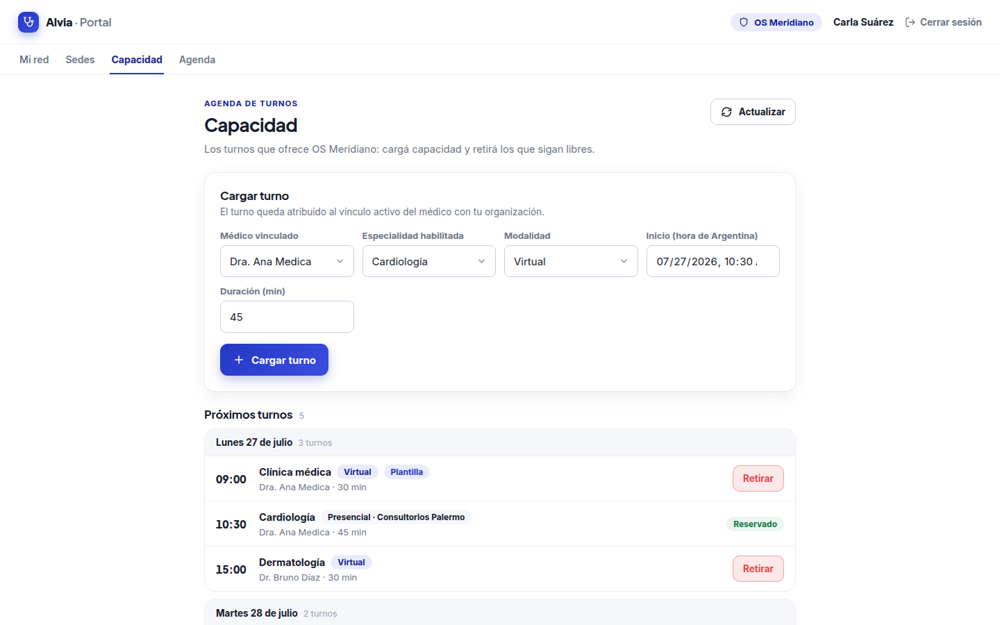
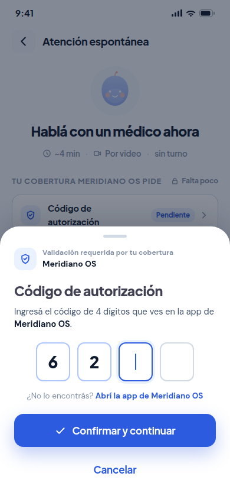
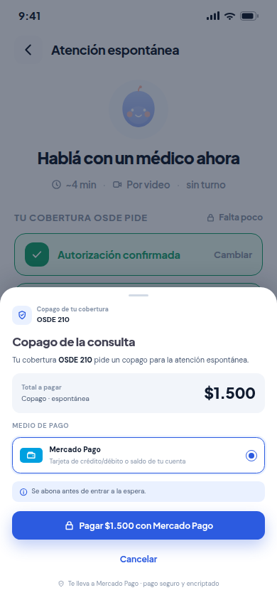

Turno
Reserva y después ingreso
El copago puede cobrarse al reservar. La autorización y/o identidad requerida se valida al ingresar.
→ Consulta agendada
Telemedicina para prepagas, obras sociales, clínicas y sanatorios
Tu organización aporta la red y define sus reglas. Alvia aporta la plataforma. Si faltan especialidades u horarios, la Red Alvia completa capacidad.
Menor costo de desarrollo y operación, con más acceso y control.
Quién aporta qué
Tu organización
Médicos, especialidades y disponibilidad propios.
Padrón si se requiere; autorización y/o identidad según cobertura; copago si corresponde.
Alvia
Aporta la plataformaPublica disponibilidad, conecta médicos y afiliados, aplica las reglas y sostiene la videoconsulta.
Sólo si falta capacidad: Red Alvia completa especialidades u horarios, incluida atención 24/7 donde aplique.
Ambas = un solo modelo combinado: tu red primero, Red Alvia como complemento.
Modelo B2B acordado, en construcción; no es una pantalla enviada.

¿Cómo usa la organización la capacidad que ya tiene?
Tus médicos ofrecen turnos y atención espontánea. Tu equipo publica horarios y sigue disponibilidad y reservas desde el portal.
Aprovechá horas ociosas, reducí presión sobre guardias costosas, fuga y sobredimensionamiento, y ganá acceso y control operativo.

¿Se preservan las reglas de cada cobertura?
Alvia verifica el padrón si se requiere, pide autorización y/o identidad según cobertura y muestra copago sólo si corresponde.
Turno
El copago puede cobrarse al reservar. La autorización y/o identidad requerida se valida al ingresar.
→ Consulta agendada
Atención espontánea
Los clearances requeridos y el copago, si corresponde, se resuelven antes de poner al afiliado en cola.
→ Cola → Consulta
Doctor primero
Si el médico entra primero, espera el clearance del afiliado. La sala se crea recién después de validarlo.
→ Consulta habilitada
Modelo conceptual en construcción. Explica condiciones del autoservicio comprador; no representa una pantalla final.


¿Qué recibe el afiliado después de la atención?
En un único lugar quedan la historia firmada, los documentos y la receta cuando corresponde. La receta es un resultado clínico, nunca una condición de ingreso.

Tu red. Tus reglas. Una plataforma.